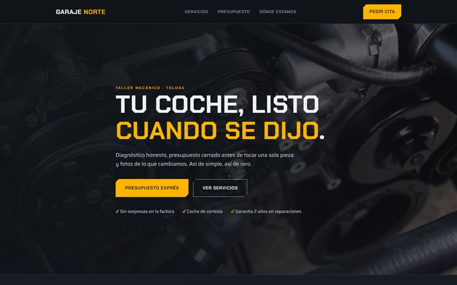

Lo único que es obligatorio de verdad
Empecemos por lo esencial, porque suele sorprender lo corta que es la lista. Para tener una web funcionando en internet solo necesitas dos cosas: un dominio (tu dirección, tunegocio.com) y un sitio donde esté alojada.
El dominio se paga siempre, todos los años, y no hay forma de evitarlo: es el alquiler de tu nombre en internet. Ronda los 12€ anuales para un .com o un .es. El alojamiento, en cambio, depende mucho de cómo esté hecha la web — y ahí es donde se disparan las diferencias.
| Concepto | Coste anual orientativo | ¿Imprescindible? |
|---|---|---|
| Dominio (.com / .es) | 10 – 15€ | Sí |
| Alojamiento web estática | 0 – 30€ | Sí |
| Alojamiento con gestor y plugins | 60 – 250€ | Solo si la web lo necesita |
| Certificado de seguridad (SSL) | 0€ | Sí, pero hoy es gratis |
| Correo con tu dominio | 0 – 70€ | Opcional |
| Mantenimiento mensual | 0 – 600€ | Opcional |
| Licencias de plantilla o plugins | 50 – 200€ | Evitable con web a medida |
| Mínimo realista para un negocio local | 12 – 40€ al año |
Sí, has leído bien: hay negocios cuyo gasto anual real es poco más que el dominio. Una web hecha a medida en código, sin gestor ni base de datos, se puede alojar en servicios que no cobran nada por el tráfico de un negocio local. Es exactamente así como está montada esta web que estás leyendo.
El certificado de seguridad: cuidado con esta factura
El candado que aparece junto a la dirección (el https) es obligatorio: sin él, el navegador avisa de que el sitio no es seguro y la gente se va. Pero desde hace años ese certificado es gratuito y se renueva solo en cualquier alojamiento decente.
Si alguien te está cobrando 60 o 90€ al año por "el SSL", pregunta exactamente qué certificado es. En la inmensa mayoría de webs de negocio local no hay ninguna razón para pagarlo.
Mantenimiento: ¿qué estás pagando exactamente?
Aquí está la parte donde más varía el mercado, de 0€ a más de 50€ al mes, y donde conviene entender qué hay debajo. La diferencia casi siempre está en cómo se construyó la web:
- Una web a medida en código no tiene plugins que actualizar ni base de datos que se corrompa. Puede pasar meses sin que nadie la toque y seguir funcionando exactamente igual de rápido.
- Una web montada sobre plantillas y plugins necesita actualizaciones constantes, y cada actualización puede romper algo. Ese mantenimiento no es un capricho del proveedor: es una consecuencia de cómo está hecha.
Dicho esto, el mantenimiento tiene sentido en un caso muy concreto: cuando quieres despreocuparte. Copias de seguridad, vigilancia de caídas, y sobre todo que alguien te cambie textos, fotos y horarios cuando lo necesites sin que tengas que aprender nada. En mi caso son 20€ al mes, y lo digo claro: no todo el mundo lo necesita. Si tu web es informativa y cambias cosas dos veces al año, probablemente te salga mejor pedir cambios sueltos.
¿Te están cobrando de más?
Cuéntame qué pagas ahora y te digo con honestidad qué es necesario y qué no. Sin compromiso.
Las cuotas escondidas más habituales
Estas son las que más veces me he encontrado al revisar la web de alguien que llega descontento de otro sitio:
- La cuota "de mantenimiento" que solo cubre tener la web encendida. Si preguntas qué se hizo el último año y la respuesta es "nada, pero ha estado online", estás pagando alojamiento a precio de servicio.
- El dominio registrado a nombre del diseñador. No es una cuota, es peor: es una correa. Cuando quieres irte, descubres que la dirección no es tuya.
- Licencias anuales de plantilla y plugins que se renuevan solas y que nadie te explicó al contratar.
- El "SEO mensual" sin informe. El SEO serio existe y cuesta dinero, pero tiene entregables. Si llevas un año pagando y nunca has visto un informe ni un cambio, no estás comprando SEO.
- Permanencias de 12, 24 o 36 meses en webs que se pagaban "a plazos". Al final acabas pagando tres veces lo que costaba, y la web sigue sin ser tuya.

Cuatro preguntas antes de firmar nada
Da igual con quién trabajes — conmigo o con cualquier otro. Haz estas cuatro preguntas y sabrás en cinco minutos con qué tipo de proveedor estás hablando:
- "¿El dominio queda a mi nombre?" La única respuesta aceptable es sí.
- "¿Qué pago el año que viene si no cambio nada?" Debería saber decírtelo al céntimo.
- "Si me voy con otro, ¿qué me llevo?" Los archivos de tu web, el dominio y el contenido. Sin rehenes.
- "¿Hay permanencia?" En una web de negocio local no hay ninguna razón técnica para atarte.
"Comprueba hoy mismo a nombre de quién está tu dominio: se ve gratis buscando tu dirección en cualquier consulta whois. Si el titular no eres tú ni tu empresa, arréglalo antes de que sea urgente — se soluciona fácil mientras la relación es buena y muy mal cuando ya no lo es."
Echando la cuenta de diez años
Merece la pena mirar el gasto en la escala en la que se vive de verdad. Una web de negocio con un mantenimiento razonable, a lo largo de diez años, puede costar menos que dos meses de un anuncio en prensa local — y trabaja los 3.650 días.
Y al revés: una web "barata" a 45€ al mes con permanencia sale, en esos mismos diez años, por más de 5.000€, y en general sigue siendo la misma plantilla del primer día. Ese es el cálculo que casi nadie hace antes de firmar.
Si quieres ver la otra mitad de la ecuación —lo que cuesta hacerla, no mantenerla— lo tienes en la guía de precios de diseño web, y los plazos reales en cuánto tarda en hacerse una web.
Preguntas frecuentes
¿Cuánto cuesta mantener una web al año como mínimo?
Lo único imprescindible es el dominio, alrededor de 12€ al año. Una web estática bien hecha puede alojarse sin coste mensual, así que hay negocios cuyo gasto real es solo el dominio. A partir de ahí, correo propio y mantenimiento son decisiones opcionales.
¿El dominio es mío o del que me hace la web?
Debe ser tuyo, registrado a tu nombre y con tu correo como contacto. Si está a nombre del diseñador, cambiar de proveedor se vuelve un problema. Es lo primero que conviene comprobar antes de contratar a nadie.
¿Necesito pagar mantenimiento todos los meses?
No siempre. Una web estática sin plugins ni base de datos no se rompe sola y puede pasar meses sin tocarse. El mantenimiento tiene sentido si quieres cambios de contenido con frecuencia y despreocuparte de copias y vigilancia.
¿Por qué unas webs cuestan 20€ al mes y otras 100€?
Por lo que hay debajo. Una web hecha a medida en código apenas consume recursos; una montada sobre plantillas con muchos plugins necesita actualizaciones constantes, hosting más potente y licencias anuales. Buena parte de esa cuota paga complejidad que tu negocio no necesita.
¿Quieres saber qué pagarías tú al año con tu web actual o con una nueva? Escríbeme y te lo desgloso por escrito, sin compromiso. También puedes ver los precios cerrados.